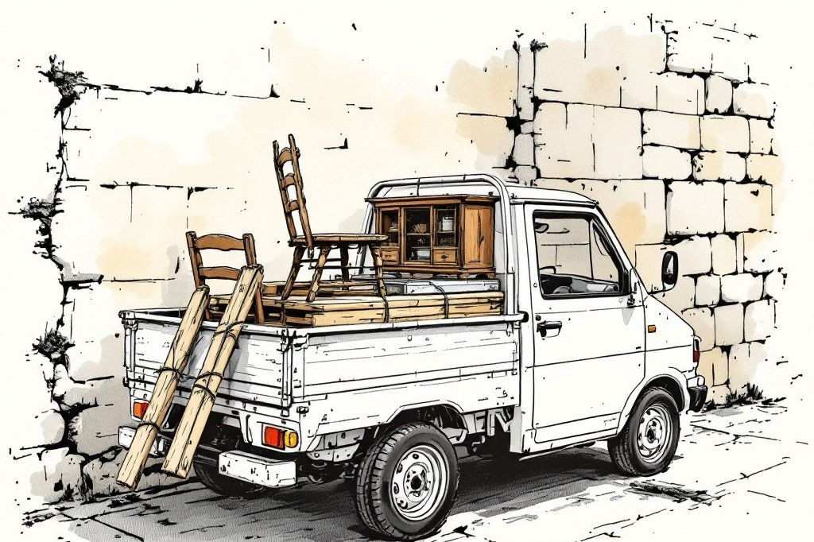

金融機関・行政・この事業を見てくださる方へ
事業の進め方
町をどう見ているか。事業として、どう組んでいるか。地域の一員として、何を考えているか。暮らしの困りごと編集室 Local Edit の考え方を、順を追って、できるだけ論理的に書きます。
その事業を、地域の暮らしの中で、長く続ける。小さく始めて、実績で広げる。借入に頼りすぎず、確かめながら進める計画です。
点在する困りごとと、眠る資源を、ひとつの循環に編み、
地域の暮らしに、息を吹き込む。

1 町をどう見ているか
課題は、「困りごとが、ばらばらに置かれている」こと。
逗子・葉山・鎌倉は、高齢化が進み、住宅地には古い家と、別荘を含む空き家が数多くあります。そこで暮らす方の困りごとを、並べてみると、次のようなつながりが見えます。
高齢化率や空き家の戸数は、出典を確認できしだい数字で掲載します。地名つきの検索はごく少なく、顔の見える窓口と、チラシ・紹介が届く市場だと見ています。
課題から、打ち手へ
| 課題 | 打ち手 | なぜ、それで解けるか |
|---|---|---|
| ① だれに頼めばいいか分からない | ひとつの窓口で、電球から片づけ、空き家まで受ける | 同じ担当が続けて伺い、家のことを覚えているので、相談が途切れない |
| ② 知らない人への不安 | 料金の目安・担当者名・訪問日時・作業の目的を、先に知らせる。協力業者は確認した範囲を伝える | 不安の原因である「分からない」を、先に減らす |
| ③ 価値あるものが捨てられる | 片づけと解体前の現場から、使えるものを買い取り、手入れして再販する | 仕入れ先が現場なので集客費がかからず、処分も減る |
| ④ 家が空いていく | 家財整理と定期の見回りで空き家化を防ぎ、改修・賃貸へつなぐ | 最初の接点から、空き家の出口まで、ひとつの関係でつながる |
2 事業としてどう見ているか
一軒の家から、いくつもの仕事が生まれる。
三つの仕事が、同じお客さん、同じ家でつながっているため、最初に出会った一軒から、仕事が順に続きます。集客の費用は、最初の一軒に集中し、その先は同じ関係から続きます。
暮らしの手助け
- 電球・草むしり・手すり・見守り（入口）
- 片づけ・生前整理・実家じまい
- 古物商の許可を取ってから、買取
物語を残す
- 家の記録集・柱で作る額
- 相談の土間・お茶・古道具の棚
- 読みもの・人間図鑑・紙芝居
道具と家の再生
- 古道具・建具・古材の再生と販売
- 救った材での改装
- 空き家の賃貸・小さな宿
事業は、ひとつの循環です。
収益の柱は、性格の違う5つ。
| 柱 | 性格 | 事業の中での役目 |
|---|---|---|
| 入口の作業 | 単発・小口・件数が出る | 信頼と顧客台帳をつくる。集客の入口。原価は協力先への外注と部品 |
| 月額の見守り・見回り | 継続・積み上がる | 閑散期の売上を支える。次の相談の窓口にもなる |
| 片づけ・生前整理 | 単価が大きく、件数は少ない | 仕入れの起点。処分費が最大の原価なので、処分を減らす設計 |
| 古道具・古材の再販 | 実績が出るまで小さく置く | 片づけの手残りを厚くする。売れた時点で計上し、在庫は90日で売る目安 |
| 家の記録集・空き家の活用 | 代表の編集の力を使う・実績が出るまで小さく置く | 価格では比べられない価値をつくる。空き家は、契約と入居の見込みが確かめられた物件だけ |
返済の元は、入口の作業・月額の契約・片づけで賄える形にしています。再販・転貸・記録集は、実績が出るまで、返済の元に数えません。
1件の収支は、こう考えます。
最大の原価は、許可業者への処分費です。だから、捨てる量を減らし、使えるものを買い取って再販し、家の記録集をご希望の方に提案する。処分を減らすことが、利益になる設計です。
開業前に、地元の許可業者から見積りを取り、1件ごとの原価を確かめます。確かめるまで、片づけの利益は小さく見積もります。
ほかの選択肢との違い。
| 比べる相手 | 相手の形 | Local Edit |
|---|---|---|
| 作業を請け負う業者・シルバー人材 | 作業を売って終わる | 同じ担当が続けて伺い、家のことを覚えている。片づけ・見回り・空き家まで相談できる |
| 片づけ・遺品整理の専門業者 | トラック何台分かで決まり、ほとんど処分 | 残す・譲る・買い取る・処分するを、本人と一緒に分ける。買取額は代金から差し引く |
| 古道具店・リサイクル店 | 持ち込みを待つ | 片づけと解体前の現場から、集客費をかけずに仕入れる |
| 不動産会社 | 売買と賃貸の取引が中心 | 片づけから家の状態まで知ったうえで、持ち主の希望に沿って次の使い方を考える |
3 資金と返済の考え方
借入に頼りすぎず、確かめながら進める。
小さく始めて、実績で広げる。そのための原則を、あらかじめ決めています。
建てない。借りて、小さく始める
倉庫・作業場は借ります。空き家も「借りて直して貸す」から。土地を買って建てる計画は、取りません。
自己資金を、積む
借入への依存を下げ、代表の自己資金と、会社の預金を厚くしたうえで、計画を組みます。
実績の後に、広げる
古い家の取得や、1日1組の宿は、決算を2期重ね、現場の責任者がそろってから、ご相談します。宿の売上は、返済の元に入れません。
下振れても、返せる設計
新事業の売上が、計画の7割にとどまる場合でも、補助員や役員報酬を調整して返済を続けられる形を、あらかじめ決めておきます。
止める条件を、決めておく
家族の合意がないまま大きな投資をしない。契約期間内に回収できる根拠のない空き家は借りない。在庫が増え続けたら仕入れを減らす。代表がいないと回らないなら、拡大より手順を整える。
| 資金の使い道（考え方） | 中身 |
|---|---|
| 設備 | 車両・工具・安全装備・保管棚／倉庫・作業場の整備／受付と案件管理の仕組み・ホームページ／許可と研修 |
| 運転 | チラシ・広告／協力先への支払い・買取在庫・材料／家賃・人件費 |
| 守りの資源 | 既存の受託の売上／会社の預金／役員報酬の調整幅。処分費・外注費は、受注がなければ発生しない変動費 |
地元の事業を引き継ぐ道（事業承継）も、並行して探します。顧客・職人・車両・許可を引き継げる会社が見つかり、返済余力が見込める場合に限ります。見つからなければ、自力で小さく始めます。
4 進め方、守るルール、測る数字
三つの段階で、ひろげます。
暮らしの手助けと、古道具の再生
拠点を持たず、借りた小さな倉庫から。料金の目安と実測を積み、顧客台帳をつくります。三つの仕事で、それぞれ1件を実測します。
拠点をひらく
相談の土間・工房・倉庫をそろえ、運営責任者を置きます。古道具の棚と、家の記録集を育てます。
空き家の再生
必要な許可と資金がそろってから、賃貸・小さな宿へ。大きく借りず、段階ごとに判断します。
守るルール（法令と、高齢のお客さまのために）
| 業務 | 守る線 |
|---|---|
| 古物の買取・再販 | 古物商の許可を開業前に取得。本人確認と記録。出張での買取は、クーリング・オフ（8日間）を説明 |
| 家庭の残置物 | 一般廃棄物。市の許可業者とお客さまの直接契約で処分。当社は運ばない |
| 解体前の取り外し | 解体工事は、許可・登録を持つ会社が請け負う。施主・元請・当社で、範囲と安全の責任を書面で合意 |
| 不動産・宿泊 | 免許・許可がそろう前は、売買・媒介・宿泊の営業を行わない。転貸は、持ち主の同意と契約前の説明 |
| 高齢のお客さま | 整理の範囲・買取価格・処分・不動産の話は別々に説明し、書面に残す。他社の査定やほかの選択肢を妨げない |
| 記録集・取材 | 本人と家族の同意の範囲でだけ公開。撤回もできる |
測る数字
開業後、次の数字を毎月記録し、続ける・直す・やめるを判断します。目標値は、地元で実測してから決めます。
5 地域の一員として
利益だけを目的にしません。
この事業が地域で果たす役割を、具体的に書きます。いずれも、売上や返済の前提には入れていません。
倉庫と工房と相談の土間を、実際の店として開きます。電話が苦手な方も、困ったときに歩いて立ち寄れる。古道具が並び、修繕の音がする場所が、ひとり暮らしのお年寄りの見守りの拠点になり、地域の人が集まる「灯台」になります。
「知らない業者が来たら、まずお電話を」と伝え続け、相談できる先になります。空き家の定期の見回りは、不法侵入・放火・不法投棄の抑止にもなります。開業時には、地元の警察署・交番にあいさつし、連携をお願いします。
協力していただく職人・許可業者・不動産会社について、許可・保険・実績・料金を確認して台帳にします。お客さまは、どの業者が安全かを自分で調べなくてよくなります。台帳は毎年見直し、苦情のあった業者とは取引をやめます。
家財の整理と見回りで空き家になるのを防ぎ、改修して次の住まい手につなぎます。片づけや解体で出る家具・建具・古材は、捨てずに直して次の使い手へ届けます（リユース）。
地元の職人・引退した技術者・子育て中の方などに、無理のない形で仕事をお願いします。後継者のいない地元の会社を引き継ぐ道も、技術と雇用を地域に残すためです。
片づける前の家で、ご本人の話と道具の来歴を聞き取り、同意の範囲で記録集や紙芝居にします。地域の昔の暮らしを、次の世代に手渡します。
| 国や自治体の施策 | この事業が担うこと |
|---|---|
| 高齢者の在宅生活の支援 | 住み慣れた家で暮らし続けるための日常の困りごとを、同じ担当者が続けて支える |
| 消費者被害の防止 | 悪質な訪問業者の被害を防ぐ相談先になり、信頼できる業者だけを紹介する |
| 空き家対策 | 空き家の発生を抑え、見回り・改修・賃貸による利活用につなぐ |
| 循環型社会・廃棄物の減量 | 家具・建具・古材を修理して再販売する |
捨てられるはずだったものと、使われなくなった家と、誰にも聞かれなかった話を、もう一度、地域の中で役に立つものに編集する。それが Local Edit です。お金はそのための対価としていただき、利益で、工房と、本と、1日1組の宿のある「街の灯台」を育てます。
運営
運営体制
運営：ストーリーテリング合同会社／代表：鈴木隆文。編集の仕事を長く続けてきた経験を、地域の暮らしの再生に生かします。現場は、確認した地域の協力業者と、これから迎える仲間とともに担います。